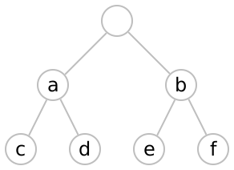
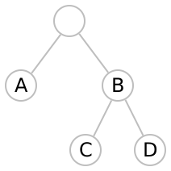

4 Theory
The kinds of tables that mondrian deals with are two-dimensional, rectangular arrays of cells where certain cells might span more than one row or column. However, not all such arrangements are allowed: the rows (or columns) spanned must be ‘consistent’ throughout the table. In effect, there is a tree structure on both the rows and the columns which the cells must respect. We call such a consistent structure a ‘mondrian.’
|-------+-------| |-------+-------| |
| A | B | | A | B | |
| :---+---+---| |---+---+---+---| |
| : b | c : d | | a : b | c : d | |
|---+---+---+---| |---+---+---+---| |
| e : f | g : h | | e : C : h | |
|---+---+---+---| |---+---+---+---| |
|---------+---------| |
| aA | bA | |
|----:----+----+----| |
| : dC | eC : fC | |
| cB +----+----+----| |
| : dD | eD : fD | |
|----+----+----+----| |


Any legal cell in the table is identified by a pair consisting of a node of the column structure and a node of the row structure. However, not every collection of legal cells is a legal table: the cells must (a) not overlap; and (b) cover the entire rectangular area.
Let R and C be finite trees (representing a row and column structure respectively). For, say, r_1, r_2 \in R, we write r_1 \leq r_2 if r_1 is closer to the root of the tree than r_2. Denote by R \times_\leq C the partial order on R\times C given by the rule (r, c) \leq (r’, c’) if and only if r \leq r’ and c \leq c’.
An element c\in R \times_\leq C is a potential cell in the table. This cell may cover other possible cells. By the interior of c, written \mathcal{I}(c), is meant the set \mathcal{I}(c)\equiv \{ i\in R\times_\leq C\mid c\leq i\}. Note that the interior of a cell also includes the cell.
A mondrian is a set, M\subset R\times_\leq C, such that:
For any two elements m, n\in M, we have \mathcal{I}(m)\cap \mathcal{I}(n)=\emptyset; and
M is maximal in the sense that it is not a proper subset of any other set satisfying the first condition.
The first condition ensures that no two cells overlap; the second ensures that, taken together, the cells cover the entire table.
The functions table-row, table-col, and so on create new tables by joining existing tables, either side-by-side or top-to-bottom. Two tables joined in this way must have a consistent row- or column-structure. The tables are said to be row-wise (or column-wise) coherent if one of their row (or column) structures is a prefix of the other. In this case, mondrian extends the smaller tree from the leaves.